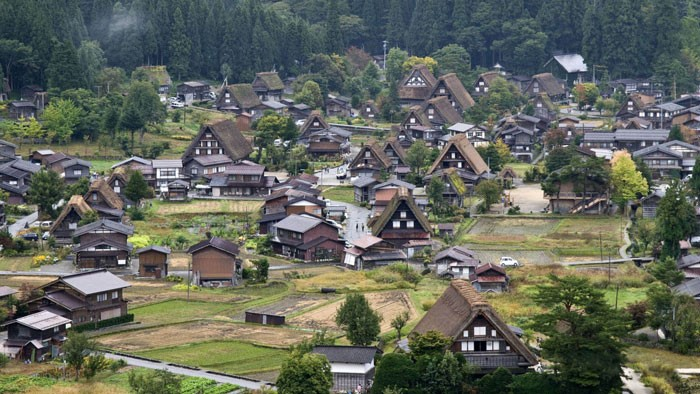
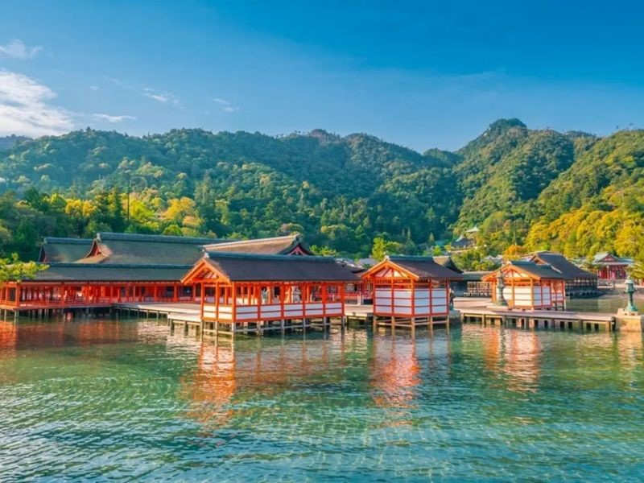
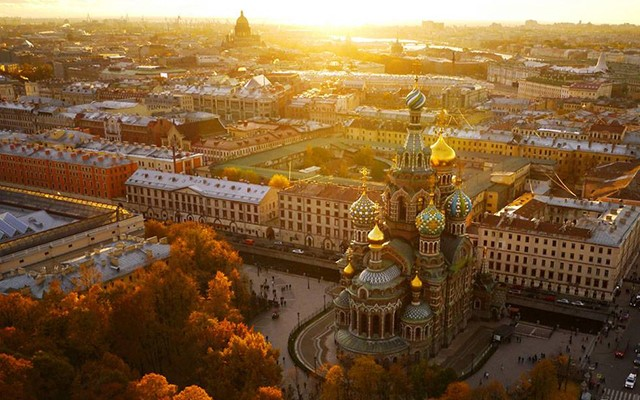
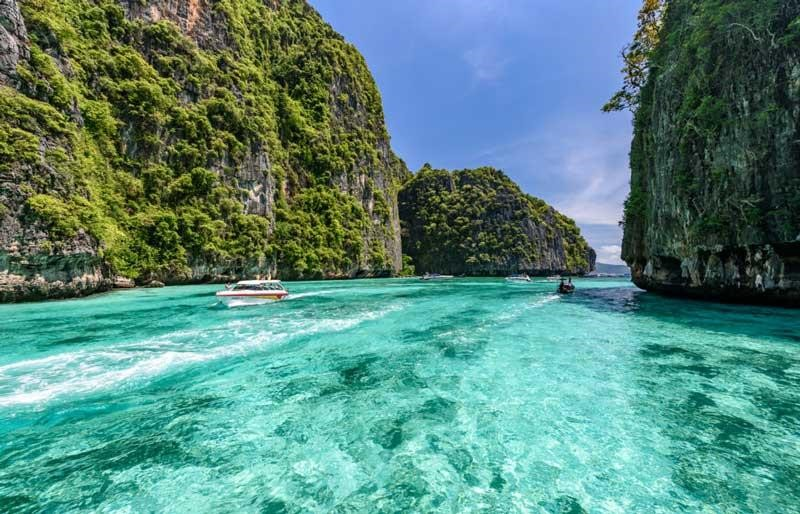
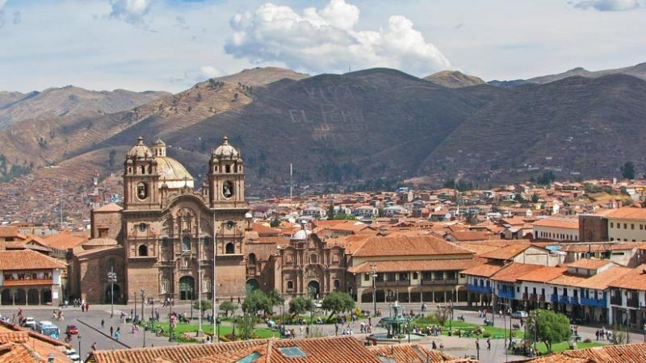

Địa Điểm Du Lịch Nổi Bật

Núi Phú Sĩ
Ngọn núi cao nhất Nhật Bản
Làng lịch sử Shirakawa-go và Gokayama
Một Di sản thế giới được UNESCO công nhận tại Nhật Bản

Di tích Lịch sử của Nara cổ
Di tích Lịch sử từng là thủ đô của Nhật Bản

Thành Himeji
Một trong những kiến trúc cổ nhất còn sót lại ở Nhật Bản
Đền Itsukushima
Quần thể này được UNESCO công nhận là Di sản thế giới, một số tòa nhà của nó cũng được Chính phủ Nhật Bản xếp hạng là các Báu vật Quốc gia.

Thủ đô Berlin
Thành phố lớn nhất của Đức và Liên minh châu Âu
Thành phố cảng Hamburg
Mang tên gọi “Cửa ngõ vào thế giới” của Đức.

Thành phố München
Là thủ phủ của tiểu bang Bayern, là thành phố lớn thứ ba của Đức sau Berlin và Hamburg và là một trong những trung tâm kinh tế, giao thông và văn hóa quan trọng nhất của Cộng hòa Liên bang Đức.

Đảo Rügen
Một hòn đảo nổi tiếng được ví như thiên đường biển ở Đức với vẻ đẹp cổ kính, trầm mặc.

Lâu đài Neuschwanstein
Lâu đài nổi tiếng nhất trong số các lâu đài của Ludwig II và là một trong những địa danh nổi tiếng hàng đầu Châu Âu.
Bali
Được mệnh danh là “hòn đảo thiên đường” với những bãi biển đẹp như tranh vẽ, những ngôi đền cổ kính và nền văn hóa đặc sắc.
Thành phố St.Petersburg
Là thành phố lớn thứ hai của Nga, được mệnh danh là “thành phố hoa lệ bên dòng Neva”.

Hồ Geneva
Nhắc đến địa điểm du lịch Thụy Sĩ, người ta liền nhớ đến hồ Geneva.

Thác nước sông Rhine
Được xem là tuyệt tác của thiên nhiên Thụy Sĩ, là nơi đại diện cho vẻ đẹp vừa hùng vĩ, vừa thơ mộng của đất nước này.

Thủ đô Rome
Rome, thủ đô của Ý nổi tiếng với những công trình kiến trúc đậm chất La Mã, những di sản văn hóa độc đáo và sở hữu các cảnh quan tuyệt đẹp, đầy ấn tượng.
Đảo Phuket
Là hòn đảo lớn nhất tại Thái Lan, được mệnh danh là “Hòn ngọc của Thái Lan”.

Thành phố New Delhi
Được mệnh danh là "thành phố vàng son" với những kiến trúc tráng lệ, những khu chợ nhộn nhịp và những món ăn ngon.

Đảo quốc Jamaica
Nổi tiếng với vẻ đẹp tự nhiên, văn hóa đa dạng và lịch sử phong phú, cùng với âm nhạc Reggae và một loạt các hoạt động giải trí đa dạng.
Thành phố Cusco
Cusco là một thành phố lịch sử và du lịch nổi tiếng tại Peru. Nằm ở phía nam nước này, Cusco là trung tâm văn hóa và lịch sử của vùng đất cao nguyên Andes và cũng là cửa ngõ chính để thăm thú khu di tích Machu Picchu - một trong những điểm đến du lịch hàng đầu thế giới.

Đảo Crete
Là một trong số nhiều đảo của đất nước nằm bên bờ Địa Trung Hải và có diện tích khoảng 8.260km2.